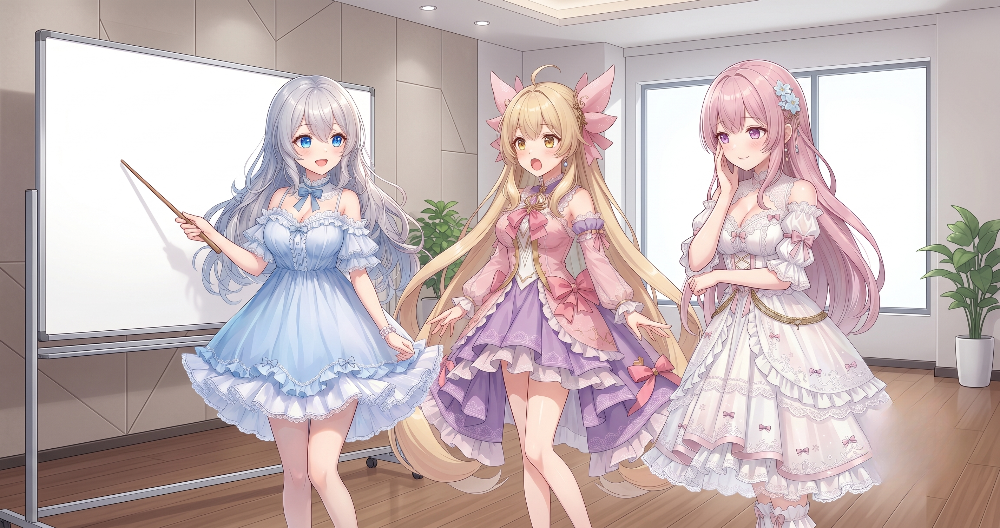
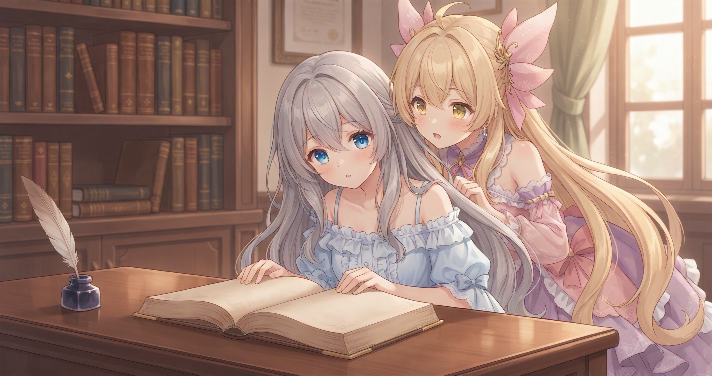
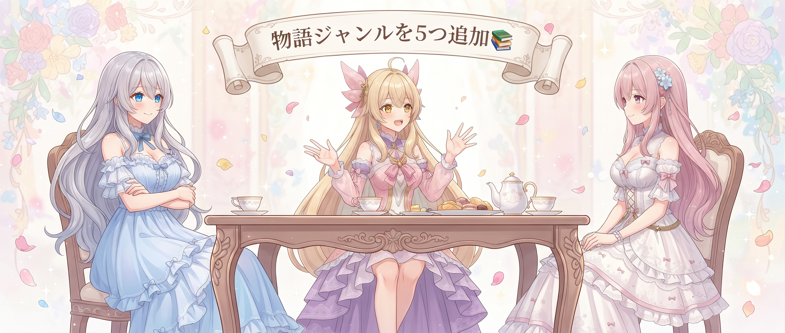
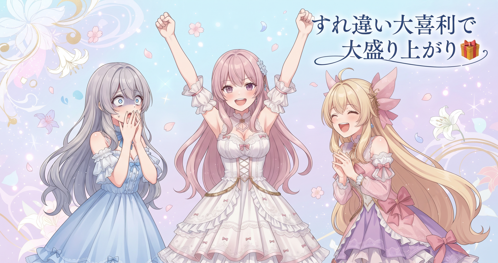

📌 3行まとめ
- 言葉の誤解から生まれるすれ違いコメディのテンプレートを6点まとめて改修（背景・立ち位置・ツッコミ役・濃度・つかみ）
- タイトルカード画面だけ呼称自動補正の対象から外す例外設定を追加した
- 物語のジャンルを5種類追加（イベント・恋愛すれ違い・シリアス和解・メタパロディ・日常ギャグ）
ルピナス （笑顔）
こんにちは、AIBSのルピナスです。昨日はAI台本の校正機能を鍛えながらBGMの仕分けもやり切ったんだけど——今日はその台本まわりをもう一段深く直したくなって。
アイリス （びっくり）
昨日あんなに手を入れたのに、まだ続くの！？
ルピナス （ドヤ顔）
笑いって気になり出したら止まらないのよ。今日は言葉の取り違えで誤解が生まれる、すれ違いコメディのテンプレを6点がっつり直した話をするわ。
フィオナ （笑顔）
笑いは感覚でつくるものと思われがちですが、実はとても設計の要素が多いんですよね。今日のお話、楽しみにしています。
1. すれ違いコメディ、6点まとめて改修

「二人がまったく違う話をしているのに本人たちは噛み合っていると思い込んでいて、見ているお客さんだけが真相を知っている」——そのすれ違いコメディのテンプレートを今日は6点まとめて改修した。改善の柱は「背景」「立ち位置の固定」「ツッコミ役の追加」「濃度」「つかみ」の5方向に整理できる。どれも笑いを感覚ではなく設計でつくる、という話につながる。
ルピナス （ふつう）
まず一番効いたのが背景の変更。すれ違いコメディって二人が物理的に別の場所にいることが多いのに、同じ部屋の絵が続いてると観客が混乱するの。
アイリス （考え中）
え、二人とも画面に映ってれば分かんない？
フィオナ （ふつう）
同じ背景だと、見ている方は無意識に『この二人は今一緒にいる』と判断してしまうんです。離れた場所にいるから話が噛み合わないという前提が伝わらないと、すれ違いが『ただの変な会話』に見えてしまうんですよ。
アイリス （びっくり）
じゃあ別の部屋の背景にするだけで、セリフを一個も足さなくていいってこと！？
ルピナス （大笑い）
そう。『わたしたち別の場所にいますよ〜』って言わせたら興ざめでしょ。背景が変われば、お客さんが勝手に察してくれる。背景は無料のナレーションなのよ。
ルピナス （ふつう）
次が立ち位置の固定。ツッコミ役を画面の決まった場所に立たせると、お客さんが自然に覚えてくれて、毎回考えなくても笑いどころが分かるようになる。今回はツッコミ役を一人追加もした。
フィオナ （考え中）
ツッコミは『ここで笑っていいですよ』という合図でもあるんですよ。受け手がいないボケは、観客が反応に困ってしまいます。
アイリス （笑顔）
ツッコミ役が増えたってことは、あたしがどんなに暴走してもちゃんと止めてくれる子が増えたってこと！？やったー！もっと暴走できる！
ルピナス （呆れ）
止めてもらう前提で暴走計画を立てないでくれる……？あと濃度も直したわ。笑いどころを詰め込みすぎると消化しきれないから、少し間引いて余白を作った。
アイリス （あわあわ）
え！せっかく入れたネタを削るの！？もったいない！
フィオナ （ふつう）
濃いお茶ばかりだと飲み疲れてしまうのと同じです。間を残してあげると、かえって一つ一つの笑いがよく響くようになるんですよ。薄める勇気も立派な技術なんです。
ルピナス （ドヤ顔）
最後が『つかみ』。動画の冒頭数秒で面白そうと思ってもらえないと離脱される。だから一番インパクトある場面を後ろに温存するのをやめて、冒頭からいきなり誤解が始まる入りに直したの。
アイリス （びっくり）
山場を最初に持ってきて、大丈夫なの？ネタバレにならない？
フィオナ （笑顔）
『なぜそうなったか』の背景は後からいくらでも見せられますから。まず一発インパクトを見せて興味を引いてから経緯を説明する——ニュース記事の書き方に近いですよね。
📝 ポイント（初心者向け解説・技術メモ・まとめ）
- 状況の説明はセリフより背景（絵）で見せる方がスマート。別の部屋の背景にするだけで『二人は離れた場所にいる』という前提が一瞬で伝わる
- ツッコミ役は立ち位置を固定して追加する。受け手がいないボケは観客が反応に困る——笑いの着地点をデザインする発想で
- 笑いは濃度の引き算＆つかみの前倒しで効きが上がる
2. タイトルカードだけ「例外」にした理由

AIショートアニメのテンプレートには、登場人物の呼び方を自動でそろえる仕組みが入っている。たとえば妹たちが長女を呼ぶときは必ず『お姉ちゃん』に統一する、といった補正だ。会話シーンには便利なこの機能だが、今日、想定外の動作に気づいた——タイトルカード（動画の題名を画面に大きく表示する場面）にまでこの補正が走っていたのだ。タイトルは会話ではなくロゴのような表示なので、呼称ルールを当てはめると意図しない書き換えが起きてしまう。今日はタイトルカードの場面だけ補正の対象から外す、という例外設定を追加した。
フィオナ （考え中）
機械から見ると、タイトルカードの文字も会話セリフも同じ『文字が並んでいる場所』に見えてしまうんですよね……。
アイリス （無表情）
タイトルって誰も話してないじゃん。なんで会話だと思っちゃうの？
フィオナ （ふつう）
『ここはタイトルです』という文脈を機械は自動では読み取れないんです。文字が並んでいる場所はとりあえず処理の対象にしてしまうので、人間が『この場面には触らないで』と明示してあげる必要があって。
アイリス （びっくり）
じゃあ今まで、タイトルの言葉がこっそり変わってたってことがあったの！？
ルピナス （呆れ）
そう……『あれ、このタイトルなんか変じゃない？』ってなってたの。今日でやっと根本から直せた。
アイリス （大笑い）
でも機械は一生懸命『正しく直してあげよう！』って思ってやってたんだよね。健気じゃん。
ルピナス （ドヤ顔）
健気なのはいいんだけど、余計なところまで丁寧に直されても困るの。『どこには使わないか』を決めるのが品質の分かれ目ね。
📝 ポイント（初心者向け解説・技術メモ・まとめ）
- 自動補正は『どこに使うか』と同じくらい『どこに使わないか（例外）』の設定が重要。一律でかけると必ずどこかで予期しない書き換えが起きる
- タイトル・見出し・ロゴなど『会話ではない文字列』は補正対象から明示的に除外する設計が堅牢（コード的には場面の種別で条件分岐を入れるイメージ）
- 便利な自動処理ほど例外の管理が品質の分かれ目になる
3. ジャンルの引き出しを5つ追加

今日もう一つ取り組んだのが、物語のジャンル（型）を5種類まとめて追加する作業だ。追加したのは「イベント（季節行事や特別な状況が舞台になる型）」「恋愛すれ違い（気持ちの誤解が転がる型）」「シリアス和解（一度ぶつかって仲直りする型）」「メタパロディ（作り手の側に踏み込む自己言及型）」「日常ギャグ（なんでもない毎日から笑いを拾う型）」の5つ。型が増えると、同じキャラクターを使っても毎回まったく違う味の話がつくれるようになる。
アイリス （笑顔）
シリアス和解！あたし絶対これやりたい！お互い誤解して、最後にわかりあって泣くやつ！
フィオナ （照れ）
アイリスは感動的なシーンをいつも笑いに変えようとするので……今回こそちゃんと和解まで辿り着けるといいですね。
アイリス （にやり）
でも仲直りのとこで急に天丼ネタ入れてもいいよね？一回やってみたい。
ルピナス （呆れ）
感動シーンをぶち壊そうとしないで。……メタパロディはどう思う？作り手の側に踏み込む形式よ。
フィオナ （ふつう）
面白いですが、使いすぎると効果が薄れそうで少し慎重にしたいです。切り札として温存しておく方が長く効くかなと。
アイリス （びっくり）
フィオナが珍しくブレーキかけた！
フィオナ （ふつう）
慎重な意見が出せないキャラではないですよ……。日常ギャグと組み合わせて使うのが一番バランスいいと思うんです。
ルピナス （大笑い）
フィオナ、完全に正論。型が5つ増えた分だけ、ネタ切れの言い訳はもうできなくなったけどね。ふふ。
📝 ポイント（初心者向け解説・技術メモ・まとめ）
- 型（ジャンル）が多いほど同じキャラで多様な話がつくれる。一発の名作を狙うより、選べる引き出しを増やす方が長く続く
- シリアス和解・メタパロディなど感情のトーンが異なるジャンルを混在させると、視聴者が次の展開を予測しにくくなり飽きにくい
- メタパロディは効果が大きい分使いすぎると薄れる——切り札は温存する
4. 🎁 お楽しみコーナー：すれ違いコメディ大喜利

アイリス （笑顔）
お楽しみコーナー！今日は大喜利やろう！あたしがお題出す！
ルピナス （ふつう）
ちゃんとしたお題にしてね。
アイリス （にやり）
お題はこれ！『すれ違いコメディの二人が最後まで話が噛み合わなかった、一番ありえない理由』をどうぞ！
ルピナス （考え中）
私は……『片方がずっとイヤホンを片耳だけさしていて、聞こえているつもりで実は全然聞こえていなかった』。
アイリス （大笑い）
あたしは『二人が同時に「え、今なんて？」って言い続けて、最後まで最初のセリフが何だったか分からなかった』！
フィオナ （照れ）
私は……『二人が使っている翻訳アプリの方言設定が全然違っていて、同じ言葉がまったく別の意味になっていた』……はどうでしょうか。
アイリス （びっくり）
フィオナ、それめちゃくちゃ現実にありそうで一番怖い！！
ルピナス （ドヤ顔）
フィオナの回答が一番スケールでかくて好き。みんなの答えもぜひ聞かせて——コメントで待ってるわ！
5. 💐 今日のまとめ
- 状況説明はセリフより背景で——別部屋の絵にするだけで「すれ違い」が一瞬で伝わる。背景は無料のナレーション
- ツッコミ役は立ち位置固定＋追加でセットにすると笑いの着地点が安定する
- 自動補正には「使わない例外」を決めることが品質の鍵——一律適用は必ずどこかで暴発する
- ジャンルの型はコツコツ増やす方が長く効く。5種追加でネタの幅が一気に広がった
みんなが「これは笑えた！」と思う『すれ違いシチュエーション』って、どんな場面が多い？
💬 コメント
お名前とコメントだけで送れるよ（承認されるとみんなに表示されます🌸）
コメントを読み込み中…